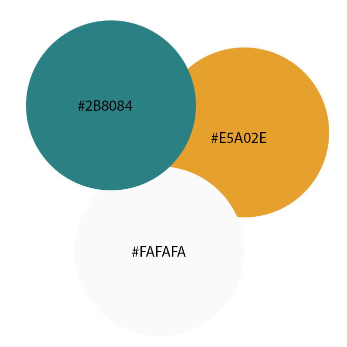
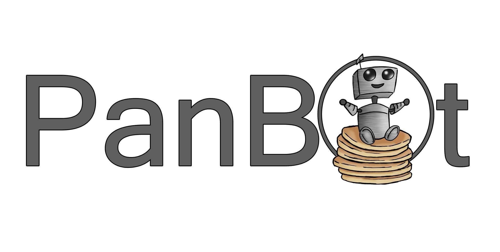

Anniken Sandøy, Martin Bondkall Gjerde, Maria Ivashentseva, Martin Stenmann Westergaard, Thomas Lund Mathisen IT2805 ~ 10. November 2016
1. Client Details
Client name: PanBot
Contact person: Maria Ivashentseva
Our client for this project is a student project that revolves around making a pancake printing robot, PanBot for short. The project is led by two students, Maria Ivashentseva and Thomas Lund Mathisen.
1. Structural changes
Folders
Our structure has not gone through a lot of transformations, but some
folders have been either removed or added where we've needed them to make
things more easily accessible for the programmers. Other things have been
renamed as we made them, to make it easier to understand what it is. The
major points will be exlained later in P3.
Index changes
One notable mention is that we've removed the media index page, and decided
to mainly use the blog index as the gate that links to both media and images.
The same goes for the About page, that is now exchanged for another index.html
and merged with about_panbot.html. Mostly we realised that having two "gate"
htmls would mean more clicking for people to get where they wanted. Bad design
bro.
Style.css
Originally we were going to have one style.css for the whole website, but
in order to make bugfixing and altering easier, there are now one for the
header, one for footer and one for body. In addition to some of the pages
that seemed to need a lot of individual styling.
Page names
When it comes to page names, we've got the addition of several new index.html.
These are mostly sites like blog.html, pangen.html, about_panbot.html, etc.
The reason for this being that we would then be able to make the URLs prettier
and easier to remember. Instead of having to access panbot.com/media/blog.html,
the blog will now be accessible through panbot.com/media. Or something similiar
depending on where we place the webpage on the great internet.
2. Design Changes
Phone
We we're orignally going to style our site for phone usability, but due
to short time we had to priorities more important problems
Colors

As we got closer to a complete site, we found that four colors were a bit too
much, and decided to remove one of them. In addition the beige color was replaced
with a whiter #FAFAFA to give the website a cleaner look, and complimenting the
blue and orange better.
Fonts
We tested several different fonts and decided to go for "Press Start 2P" for
the header and menus up there, as it was slighty reminicent of robots so we
found it fitting. For the rest of the site we've decided to go for a less stylized fonts
Link styles
The part about having an underline under all links have changed a bit, as we assume the user
will understand that the buttons on the page are actually buttons which link to other pages on the
site. The underline will be used if there is a link in a text instead.
Logo

Our logo is made by a fellow grapical design student, and portrays a small
cute robot, framed in, and sitting on top of a pile of pancakes. This was
slightly altered in that the robot was moved in front of the text and the
font was changed.
Scaling
As we found time to be an issue, we decided to neglect the scaling and will
focus on maximising the usablility on computer screens rather than smaller devices.
Layout
The layout of the gallery has been changed most drasticly. Where instead of
the slider at the bottom with several images, it's currently restricted to four.
To counter this we'll add images at the bottom instead. There is also
no color transition between the thumbnails and the larger image, which was
originally planned.
3. Javascript funtions
Dropdown menu
No change, this is still implemented in the header and makes for easy navigation between the pages.
Carousel -> Slideshow
Carousel.js has become slideshow.js. This has been changed slightly as
the other function was a bit too complicated for us, and now we've got
4 static images under the larger one on top. If you click one of the
thumbnails, the small image takes the place of the large one.
Canvas -> PanGen
We changed the name of canvas to become PanGen(Pancake Generator),
and changed the design on some of the buttons, adding a slider for size
of the brush. The code is borrowed from here.
Dynamic Time box -> Pancake Advisor
Yet another name change and it's now known as Pancake Advisor. One
would belive that we'd learn to keep the original names, but nooo.
Magnifying pictures
This function was completely dropped as
Let It Rain
This javascript function is completely new! It's an easteregg hidden
somewhere on the website, can you find it? (Hint: It's on every page.)
We decided that we needed to add a bit of fun on the page, and this is
the result.
4. Plan
index.html
media/
index.html
images.html
videos.html
about/
index.html
about_us.html
our_vision.html
pangen/
pangen.html
images/
image_1
image_2
...
image_n
videos/
video_1.mp4
video_1.ogv
video_1.webm
video_2.mp4
video_2.ogv
video_2.webm
modularity/
header.html
footer.html
box_elements.html
showreel.html
js/
letitrain.js
modal.js
modulize.js
pangen.js
slideshow.js
css/
Media/
blog.css
img_style.css
video_style.css
about.css
footer.css
frontpage.css
header.css
style.css
Development plan revisited
A list of what was done by who in the end, and notes on eventual changes.
Task
Description
In charge
Done by
Notes
style.css
Standard template design that will be used on all the webpages
Anniken
Thomas Martin G. Martin W.
One style.css turned into many. Now we've got 8.
index.html
The main media page, featuring link to the galleries and the blog
Martin W
Martin W, Thomas
We now have several index.html depending on which subcategory of the page you're accessing. This makes the links easier to remember for visitors.
blog.html
Page for the log entries of the development team
Martin W
Martin W
This page was merged with the media.html to make a new index.html.
images.html
Image gallery
Martin G
Martin G
Originally planned to click on an image and then open the slideshow, but we decided it would look better with the slideshow directly on the site
video.html
Video gallery
Martin G
Martin G
Done as planned
about_us.html
Page for indtroducing the main actors that initiated the project
Martin W
Martin W
Notes
about_panbot.html
Page about the project
Masha
Martin W
Now the index.html file for the About section with links to both about_us.html and our_vision.html.
Our_vision.html
Page about the future goals and plan for the project
Masha
Martin W
Notes
drop_down_menu.js
Drop down menues for the header
Masha
Masha
Notes
image_transition.js
Slideshow function for the media partitions of the website
Thomas
Martin G
New name: slideshow.js
canvas.js
The function for the drawing application of PanGen
Thomas
Thomas, Masha
Done as planned
magnify_image.js
A function for the overlay that will appear once pictures/videos are clicked
Martin G
Deleted
We decided to not implement this function.
header.html
The main header that will stay the same across all pages
Thomas
Thomas
Notes
box.html
Modulated box elements that will be used across the website
Thomas
Thomas
Notes
dynamic_window.js
Function imbeded in header that advices people what to eat at differing times of the day
Thomas
Martin W
Changed name and is now known as pancake_advisor.html